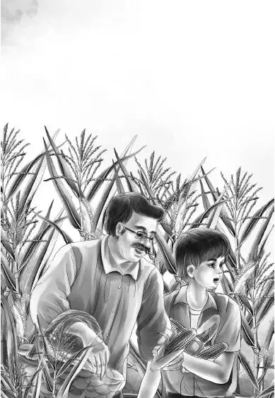
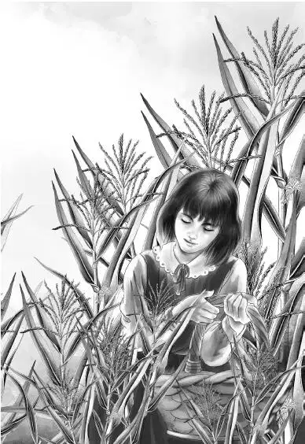

What a rush！Next day the Aldens went dashing around buying food and packing their things. By noon they were ready to go. When they were leaving， Watch， the dog， trotted along with Jessie. He was ready to go， too.
“You can’t come， old boy，” said Henry. “Too bad. You wouldn’t like riding in a caboose.”
Jessie tried to explain to Watch why he couldn’t go. At last she thought he understood. Anyway he did not whine. He turned right around and went back into the house where Mrs. McGregor， the housekeeper， was waiting for him.
Very soon Henry had parked the station wagon in the freightyard with the trainmen’s cars. He planned to leave it for Mr. Carter， who worked for Mr. Alden. Then everyone helped move into the two cabooses.
“Oh， what fun this is！” said Jessie. She and Violet began to put the cans of food on the shelves in the big caboose. Henry and Benny poured water into the tank and lifted a big cake of ice into the icebox.
When the things were put away， the family got out again. They stood by the steps and watched the engineer far down the tracks.
“Look， Grandfather，” said Benny. “There’s a postman！Do you suppose he would have any mail for you？”
“Well， perhaps I might have a letter from my friend who owns the Little North Railroad，” said Mr. Alden. “He knows we’ll be on this freight. But I never knew a postman delivered mail to a freight train before. If I have any， Mr. Carr will bring it to me.
“I’ll run down and see，” said Benny. He was off before they could stop him.
“I’d better go with him，” said Henry. And off he went， too. He caught up with Benny， and they reached Mr. Carr and the postman at the same time.
The postman was a very tall， heavy man. His blue-gray uniform and cap were too small for him. He had a small black mustache and black eyes. He looked at the two boys closely.
Benny said， “I didn’t know a postman came to a freight train， Mr. Carr.”
Mr. Carr laughed. “ This is a very special postman，” he said. “When he has a letter for me， he is kind enough to bring it to the train. His name is Sid Weston.”
“How do you do，” said both boys.
Benny went on. “Our name is Alden. Is there any mail for our grandfather， Mr. Alden？”
“No，” said Mr. Weston， shaking his head. Then he turned away and spoke in a low voice to Mr. Carr. “Could I go down to that big caboose and just look at something inside？It won’t take ten minutes.”
“Sorry，” said Mr. Carr. “We can’t wait ten minutes. You boys run back as fast as you can. We go in just two minutes. Tell everyone to sit down because there will be a bang when we back the train into the caboose.”
But Henry and Benny had already gone. The minute they got on board， they waved back to Mr. Carr.
Mr. Carr raised his arm and waved at the engineer. The freight train backed toward the caboose. Then came the bang！The little caboose and the big caboose were coupled at the very end of the train， behind the caboose used by the trainmen.
“What a train！” said Grandfather. “Three cabooses in a row！People will smile when this Little North freight goes by.”
The Aldens heard the whistle on the engine far ahead. Then very slowly the train began to move. Mr. Carr swung himself onto a boxcar.
“Say， isn’t this exciting！” said Benny. “To be riding in a caboose at last. I’ve always wanted to live in a caboose.”
“So have I，” said Grandfather， smiling.
“Come on， Ben，” said Henry. “Let’s sit out on the back platform. Want to come， Jessie？”
“Yes， I’d like to，” said Jessie.
Violet said， “I’ll stay with Grandfather in the big caboose.”
“Isn’t this great， flying along！” said Benny after a few minutes. Then he leaned forward and said， “Henry， did you really look at that big postman？Did you hear him ask to see this caboose？”
“Yes， Ben， I did，” said Henry. He looked quickly at Benny. “I thought it was a strange thing to ask.”
“Well， I thought it was an awfully strange thing to ask，” said Benny.
Jessie said， “ What are you boys talking about？”
Henry told her about Sid Weston， the postman. She said， “What do you think he wanted to look at？”
“I haven’t any idea，” said Henry. “He was a very heavy man. I’m sure he couldn’t have run as fast as we did.”
“Yes， wasn’t he enormous？” said Benny.
“Even his cap was too small for him，” said Henry， laughing.
“A mystery！” shouted Benny. “The mysterious caboose！”
“Now don’t get excited， Benny，” said Jessie. “It is probably something very simple. Maybe he is just interested in trains. Some people are.”
But Benny had the last word as usual. “That postman certainly thought there was something different about this big caboose， and sometime I’ll find out. You just wait and see.”
“Right！” said Henry. “You didn’t hear the postman， Jessie. I’m sure he was worried about something.”
“I’m sure you’re right if you both say so，” said Jessie. “But let’s enjoy this lovely country with all the woods and fields.”
“I’m enjoying them，” said Benny. “I noticed every cornfield we passed. The corn ought to be ripe soon.”
Along went the train. It passed through one small town after another. Just before five o’clock Benny said， “Look at that ladder over our heads. I’d like to climb up and walk on top of the caboose.”
Just as he said this， a foot suddenly appeared on the top step of the ladder. Then another foot appeared， then two long legs dressed in overalls.
“Oh， look what’s coming！” said Benny.
At last a head appeared with a railroad cap， and a smiling man said， “Hello！I hope I didn’t scare you？”
“No，” said Henry. “But you surprised us.”
“I have a message from the engineer，” said the man.
Benny said， “He’s the boss of the train.”
“No，” said the man， shaking his head. “The conductor， Mr. Carr， is the boss of the train. The engineer is number-two man. I’m the brakeman. My name is Al.”
“I never knew the conductor was the boss，” said Benny.
“Well， he is，” said Al. “The engineer， Mr. Davis， runs the train， but the conductor tells him when to stop and when to go.”
“What’s this message， Al？” asked Henry.
The brakeman seemed to be right at home on the ladder. He held on with one hand， swung one foot， and took his cap off and put it on again. He said， “Really I have two messages. The first one is this. If you are in any trouble， you will want to stop the train.”
Benny said， “Oh， I don’t think we will have any trouble.”
“You never can tell， Ben，” said Henry. “What do we do， Al？”
“Well， there’s a little lever by the desk. You turn that halfway. That puts on the air brakes. Even if we had a hundred cars， the train would stop.”
“I’ll look for that lever when we go inside，” said Henry.
Violet came to the door to see what was going on. She was just in time to hear Benny say， “Al， did you see that big postman just before we started？Did you hear what he said？”
“I saw him，” said Al. “But I didn’t hear what he said. Why？”
“Oh， nothing，” said Benny.
“I have another message，” said Al. “At about five o’clock we go right through the engineer’s field of corn. He has sweet corn on both sides of the tracks. Mr. Davis says if you want some corn for supper， just get off and pick all you want.”
“Sweet corn！” said Violet. “We love it. This will certainly be fresh.”
“Cook it as soon as you pick it，” said Al. “I’m getting enough for our supper， too.”
“Oh， are you the cook？” Jessie asked.
“Yes，” said Al， “I do the cooking. I’d ask you to come into our caboose， but Mr. Carr wants the door locked at the end of your second caboose. He thinks you’ll be better off that way. We use our caboose just for work， you know.”
“I’ll put the water on to boil right now，” said Jessie. “Then it will be ready for the corn.”
“Oh， don’t do that， miss，” said Al. “Get a big kettle of cold water and put in the corn. When the water is boiling fast， the corn is done.”
“Thank you，” said Jessie， “I’ll try it.”
“It’s the best way to cook corn，” Al told her. “I’ll stay right here， and you get off when I do.”
Jessie went in to fill the biggest kettle with cold water. She told Mr. Alden what they were going to do. Everyone stood ready to get off. Soon the train began to slow down.
“I see the cornfield！” Benny called out. “How many ears shall we pick， Jessie？”
“Oh， I should say two dozen ears. Put them in this old box.”


The train stopped， and everyone got off and began to pick corn.
Mr. Alden said， “I haven’t picked corn for years. What else are we going to have for supper？”
Jessie answered， “Plenty of butter on the corn， hamburgers， cookies， and milk.”
“Good enough，” said Grandfather. “ I’m hungry already.”
The engineer gave a loud whistle， and they all climbed back into the caboose. Everyone sat down and helped pull off the corn husks. Jessie dropped the ears into the cold water， and Henry turned on the stove.
Soon they were sitting down to supper.
“What delicious corn！” said Mr. Alden.
“It certainly is fresh，” said Benny. “Right from the field into the kettle！”
After the dishes were done， the Aldens took turns riding on the little back platform. As they sat there， Al came climbing down the ladder again.
He said， “Mr. Carr forgot to tell you that we stop at Beaver Lake at nine o’clock tomorrow morning. You will like that.”
“Why？” asked Benny.
“You always want to know why， don’t you？Well， you can watch real live beavers at work. We have to stop for an hour to load freight， and you might as well watch something interesting.”
“I should think the beavers would run away if they saw us watching them，” said Benny.
“That’s the secret，” said Al. “They won’t see you. Now don’t ask me why， young man. Just wait and see. One more thing. There is an old man who takes care of these wild beavers. He’s a strange old fellow， but he doesn’t want people to kill all the beavers. So he lives in the woods and keeps the hunters away. You may see Old Beaver， and you may not. He’s odd. Then a little later we stop at Pinedale for ice and water.”
“ Thanks a lot，” said Mr. Alden. Al disappeared up the ladder.
When the stars came out， Mr. Alden said， “Our lights are not bright enough to read by. I’m going to bed.”
“I’m tired， too，” said Violet. The girls said goodnight and went into the small caboose.
Henry and Grandfather put clean sheets on the three old black mattresses， and Benny started to climb into his top bunk in the lookout. He began to laugh.
“I can hardly reach these steps with my feet，” he said. “First one side and then the other. I guess these footholds were made for a man.”
Mr. Alden and Henry watched.
“Just made it， Ben，” said Henry. “Those steps are too hard for you.”
“But I like it up here，” said Benny. “I can look out at the stars.”
He began to wonder about the postman and the beavers and the big caboose， but suddenly he fell asleep.
The caboose rattled and banged along until morning.